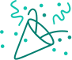

Диджитализация карт Рив Гош
Понимая, что развитие мультиканальной стратегии имеет важное значение для роста продаж подарочных карт, осенью 2016 года компания «Рив Гош» совместно с сервисом Digift запустила сервис по продаже электронных подарочных сертификатов на сайте www.rivegauche.ru
Факты
17% — превышение среднего номинала ЭПК по сравнению с пластиком (всего через месяц после запуска сервиса).
3400% — превышение среднего номинала ЭПК по сравнению с пластиком (всего через месяц после запуска сервиса).
25 – 30% — прогнозируемый рост продаж электронных подарочных карт «Рив Гош» к концу 2017 года.

Поздравляем!
Ваша заявка успешно отправлена. В ближайшее время с вами свяжется наш менеджер.